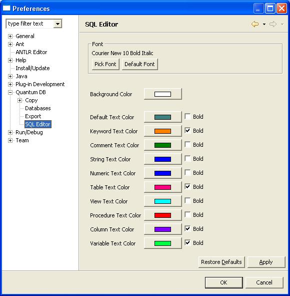
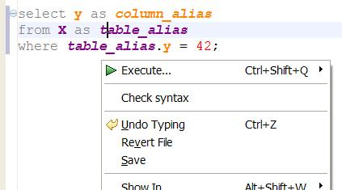
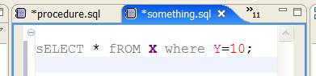
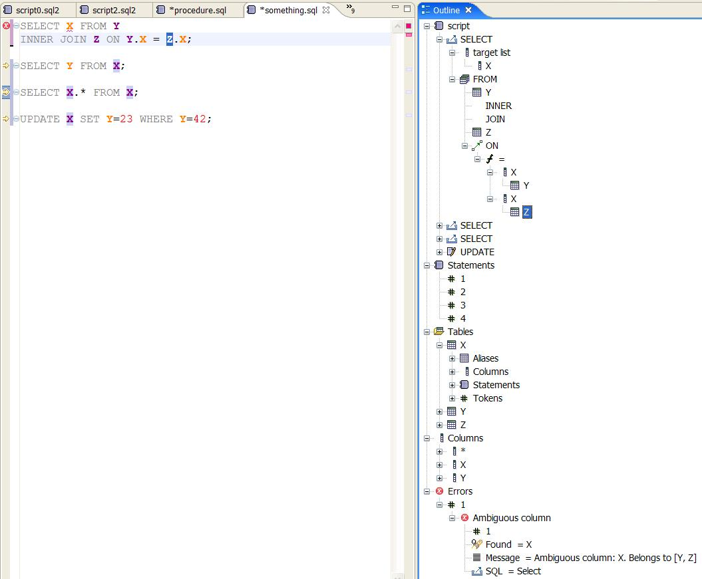

The editor is the Quantum plugin feature for editing SQL files. It is configured to handle files with extensions of .sql and .ddl. In time the editor may replace the Query View, if only for being able to save the queries you enter. The editor has the following features:
If your script contains more than one statement, make sure the final character of each statement is a ; (semicolon). There are databases out there that do not require this, but Quantum does, and it will make your code easier to move to other databases.
When you are working with the editor, having the "Quantum SQL Log" view visible will help to inform you of errors. Errors can occur because of stupid programming, but also insufficient privileges on the database objects, and a whole lot of other reasons. If you think is a bug please let us know.
You can invoke the editor in various ways:
The latter two options are useful for editing procedures. Please note that Quantum aims to support all kinds of coding related to databases. So, in the future expect support for triggers too.
There is a potential pitfall when you change bookmarks and expect the content of the editor to be checked against the new bookmark. That will not happen (yet). You have to close and open the editor window to assign it to the last bookmark used. If you do not do that, the old bookmark will still be 'active' for that editor, even when the bookmark has been disconnected...
The colors can be configured using the menu option Window|Preferences; then select Quantum DB and finally SQL Editor. You should get a dialog window resembling this:

Not all syntactic elements are supported yet.
There are different modes when editing a piece of SQL. For some statements the syntax will pass the specification, for others it will not. Sometimes the previous contents will have passed the specs, but typing in new characters will destroy the syntactically sound nature of your statement. Quantum tries to assist you in all phases of query development. Sometimes the limited knowledge the application has about your statement, might seem stupid. So, check the code, and improve.
The main problem with parsing/checking/validating a SQL statement is to find out what is a real table, what is a real column and what is a typo. Finding out is not really difficult, but finding out while you type and the server is on the other side of the world is.
If a statement has been successfully parsed once, the plugin will remember valid table and column names. In our opinion, this will help you enter your queries more efficiently.
The preferences page allows you to deactivate Syntax highlighting. This was because one of our users was working with a query that was so long and so convoluted that coloring the elements took so long, the user assumed that Quantum/Eclipse hung.
For the next part of the documentation, I use a very simple (yet difficult enough) setup database that uses 3 tables:
-- Script created by Quantum DB on Jan 22, 2008 9:02:54 PM
CREATE TABLE X (
Y INTEGER(10) NOT NULL
);
CREATE TABLE Y (
X INTEGER(10) NOT NULL
);
CREATE TABLE Z (
X INTEGER(10) NOT NULL ,
Y INTEGER(10)
);
This poses enough problems for Content Assistant.
If you type SELECT A FROM B, the syntax checker will infer that A is a column and B is a table. If you do not perform a syntax check A will be an identifier and B too. If the syntax coloring for tables and columns is different from the default color, you will be visually informed about what Quantum has detected as columns and tables. As you continue typing the query, information about the query will increase, such as columns belonging to tables, aliases used in the query and so on. The idea is that the further you are with your query, the better Quantum can support you.
A syntax check will be performed if:
This syntax check will update the internal data structures within the plugin. As this might be a time-consuming process, you might want to prevent a syntax check from occurring. There is a delicate balance of course: without a syntax check, the chance that you will be offered good content assist is lower and the chance that your statement will be successfully executed against the database has not increased.
Asking for content assist when not much information is present, will also take much time. Sometimes Quantum will not even honour your request: SELECT {Ctrl-space} will get no response. But SELECT A{Ctrl-space} will eventually :-( get you a list of all columns starting with an A (if the JDBC driver or someone on the Quantum team made this possible). This is not efficient. But since I wrote this, we have implemented a caching system that improves performance.
A better way to enter your queries is to write SELECT B FROM A and then hit Check syntax. You will get the best results if B is a real column of A, and A exists. Quantum then has a basis for further assistance.
Depending on where you are editing the statement, Quantum will act differently. In a statement such as
select x from x where x.Y=10;
it really depends where the cursor is:
| cursor behind | what you type | result of content assist |
|---|---|---|
| select x | . | Columns in the X table: Y |
| from | a space/blank | The tables in the bookmark: X, Y, Z |
The editor is also aware of the relationships between tables. If you have:
SELECT x FROM Y INNER JOIN
And then with the cursor behind JOIN, you type a space, you will get the following assists:
| on | This is the keyword on, clearly an error :-( |
| Z:Z_X | Select this and the query becomes: SELECT x FROM Y INNER JOIN Z ON Y.X = Z.X |
Z_X is the name of the relation between tables X and Z. If you have a table that is related to a lot of other tables, it is certainly worth to give the Content Assistant some time to calculate the proposals. If you go on typing, you will not be assisted as good as if you wait a bit after the space.
Templates are pieces of content assist that allow quick entering of prepared statements:
In the picture you can see 4 templates: they are the ones that provide some insight into their function. There is also one for the SELECT statement itself. You use the tab key to move from editable element to editable element.
You can define your own templates for the SQL editor in the Preferences:


Syntax checking is a two-step process. The first step is to check the text against the grammar as defined in the antlr .g files. This will find general errors of which the following is a simple example:
select * from X inner join Z where this = that
This will produce an error: unexpected token: where, because there should be an ON keyword after Z.
These errors are reported in the general Problems view.
Once the syntactical errors are resolved, there are logical errors to be adressed.
The grammar check will pass stuff like:
select a from b inner join c on c.b = d.e
But your database does not have tables called b and c and columns called a, b and e. That is when you need to connect to the database you want to run the query on. The syntax check will then produce errors:
The errors Quantum detects are:
If Quantum has found a logical error it will provide a Quick Fix when it can.
Currently the following Quick Fixes are implemented:
You can access the Quick Fix from the Problems view, by right-clicking the Problem you want to fix, and then select Quick Fix. Ctrl-1 does not work in 3.2 and 3.3. I would like advice on this...
The following is a small tutoral showing how to get the most out of the features in the editor. It is assumed you are connected to the bookmark of choice.
You should end up with something like this:

If your query is made up of more than one table or view, you can have Quantum join them for you. Note that relations between the tables need to be defined in the database for this to work.
Quantum will also assist you in setting up the where clause. It will list the columns of the tables in the statement on top, then the tables and then other options.
The following table list some statements with less obvious errors.
| Statement | Error | Quick Fix |
|---|---|---|
SELECT FROM X | Unexpected token: FROM | None |
select XAlias.Y, X.Y, XAlias2.Y from X Xalias, X, X XAlias2 where XAlias.Y=42; | No error Note that column should be referenced by alias | None |
select XAlias.Y, Y from X XAlias, X, X Xalias2 where XALias.Y=42; | Ambiguous column name: [XAlias|XAlias2|X].Y | Available |
select XAlias.Y, XAlias.Y from X XAlias, X XAlias where XAlias.Y = 42; | XAlias interface is exposed more than once | None |
SELECT X FROM Y INNER JOIN Z ON Y.X = Z.X; | Ambiguous column: X belongs to [Y|Z] | Available |
The outline page gives you various ways to look at the script in your editor.

The image above shows a typical outline. When you select an item in the outline, all matching elements in the query will be highlighted. For this the search highlight is used. This can be configured in Window|Preferences|General|Editors|Text Editors|Annontations and finally Search results.
The Content Page will show columns with the same name as the one selected in the outline, but from other tables with a different annotation. The bookmark annotation is used for this. You might want to configure an alternative display for this annotation. See the same preference page as above for details.
In the SQL Editor the Quantum team has chosen to replace tabs by spaces. So do not be surprised if you paste in something with tabs and paste it back it will contain no tabs any more, but just spaces.
The editor should do this automatically, but if you get unexpected results, you can invoke the Format query action from the context menu.